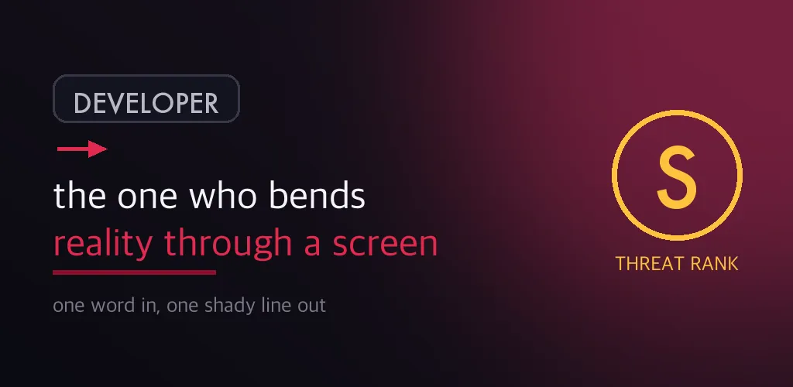
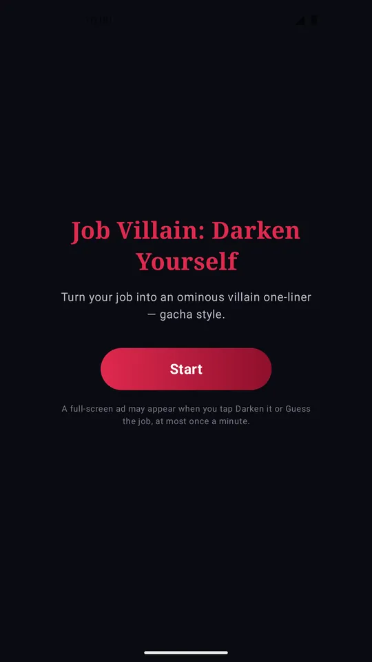
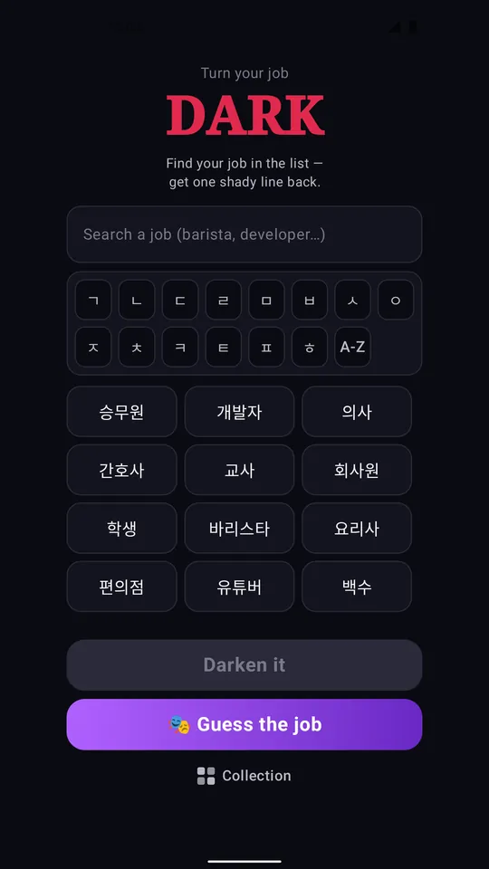
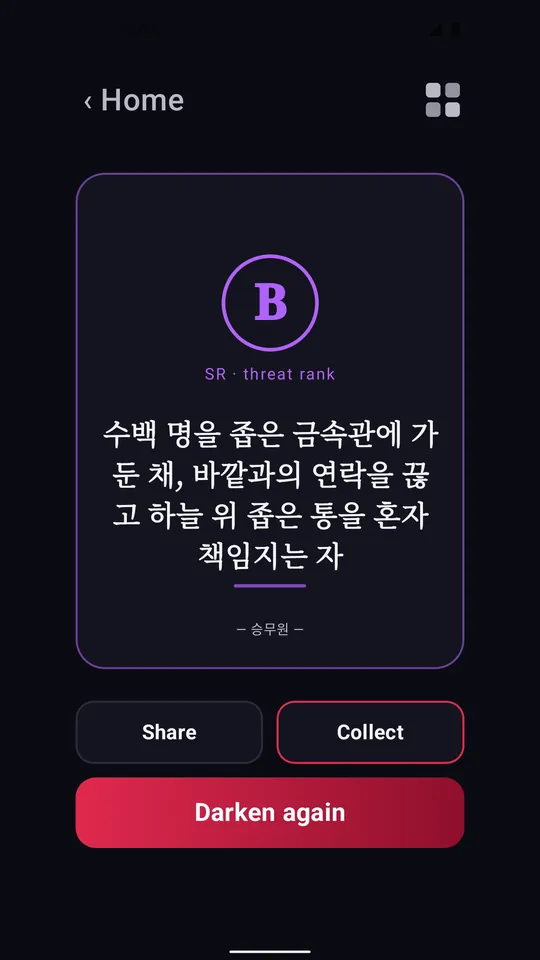
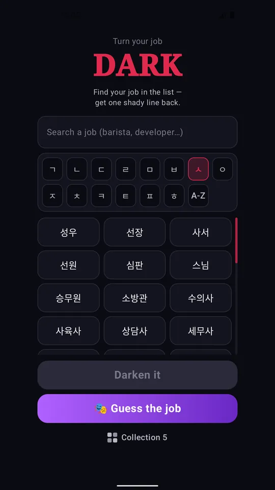
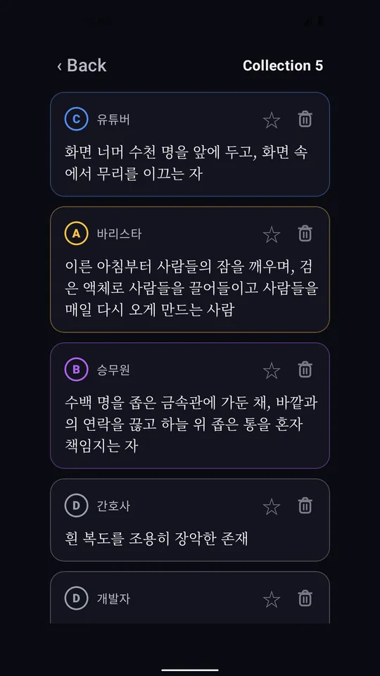
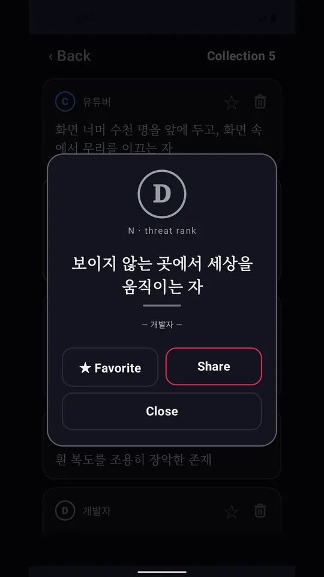

Job Villain: Darken Yourself
Korean villain one-liners from your job. A gacha generator for your profile.







About this app
Please read first: the generated lines are in Korean. The app's menus and buttons are translated, but the villain one-liners themselves — and the suggested job chips — are Korean, because the whole thing is built on Korean wordplay. If you do not read Korean, this app will not be much fun. It is made for Korean speakers and for people learning Korean.
Search "승무원" (flight attendant) and you get back: "수만 피트 상공에서 모두를 감시하는 자" — the one who watches everyone from tens of thousands of feet up.
Enter a job, a hobby, or just something you do all day. You get one short, shady line back — the kind of thing a crime syndicate would put on a member profile.
300 jobs
Developers and nurses and teachers, but also haenyeo divers, salt farmers, fire investigators and funeral directors — 300 in all, plus being between jobs, a student, on military service or on parental leave. Type a few characters and the list narrows.
A different line every time
Draw again and the sentence is rebuilt from scratch. Keep pulling until one fits. The line you just saw will not come back.
Threat ranks D through S
Every draw comes with a rank. Higher ranks give longer, heavier sentences. S is rare.
Collect and share
Keep the good ones in your collection and star your favorites to pin them to the top. Any line can be turned into a dark card image and dropped straight into a group chat or a social feed — it is about the right length for a profile bio.
Guess the job
There is also a quiz: read a darkened line and pick the real job out of four choices. See how many you can get in a row.
Works offline
Every sentence is built inside the app. No sign-up, no login, no personal details. What you type is never sent anywhere.
About ads
A full-screen ad can appear when you start a new darken or a new quiz, with a minimum gap of one minute — so drawing several in a row will not keep showing ads. The first tap after installing is always ad-free, and redrawing from the result screen never shows one.
Disclaimer
This app is fictional entertainment. The generated lines are exaggerated jokes with no connection to any real person or organization, and they are not meant to judge or belittle any occupation.
Android · free with ads · Developer: RealTunaLove · Store listing in 17 languages
Background story: why I built it